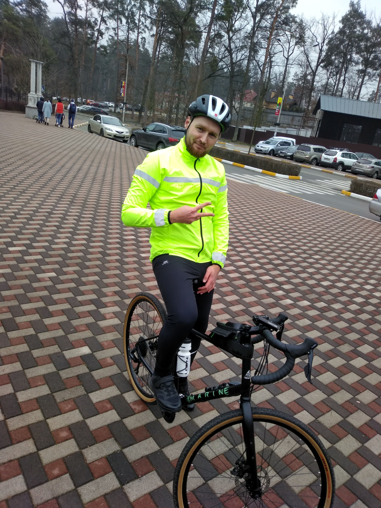

Рыбалка Андрей Сергеевич
Химик, 10 000 грн
Полная занятость
Возраст: 27 лет;
Город: Белая Церковь;
Готов к переезду: Киев, Харьков.
|

|
Контактная информация
- Телефон: +380971234567;
- E-mail: mail@gmail.com
- Instagram
Опыт работы
| Год |
Компания |
Должность |
|
| 2016 - 2017 |
ООО "ФЗ Биофарма" |
Химик-аналитик Департамента исследований и разработок |
Обязаности |
| 2014 - 2016 |
ПАТ "Витамины", г. Умань |
Старший химик, Отдел контроля качества |
Обязаности |
| 2013 - 2014 |
ПАТ "Витамины", г. Умань |
Химик, Отдел контроля качества |
Обязаности |
Образование
ХНУ им. В.Н. Каразина, г. Харьков (химический факультет, магистр, 2008 - 2013 гг.)
Дополнительное образование
- Семинар: "Оценка неопределенности измерений в лабораториях." (28 - 29 января 2014 г.)
- Семинар: "Применение хроматографических методов исследования в фармацевтической промышленности." (25 февраля 2015 г.)
- Kinetex Core-Shell Technology for Pharmaceutical Methods and Eur. Ph. Monograph Methods (30 ноября 2016 г.)
Профессиональные навыки
- Работа на жидкостных хроматографах Agilent и Waters;
- Работа с Windows, Linux, MS Office;
- Языки: украинский (родной), русский (свободно), английский (intermediate).
Дополнительная информация
Ответственность, стрессоустойчивость, внимательность, самообучаемость.
Связаться со мной